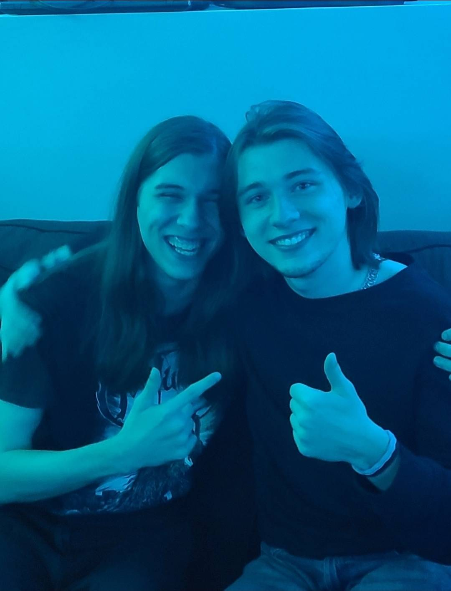
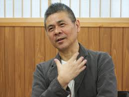
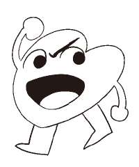
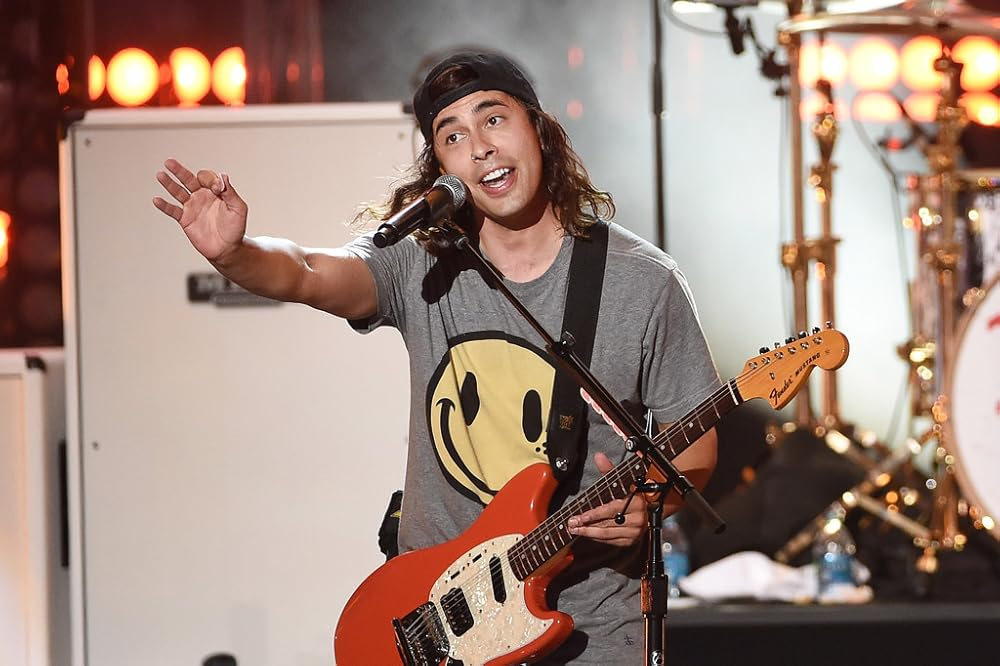
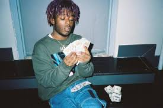
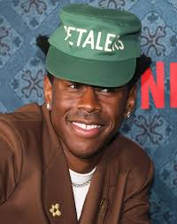
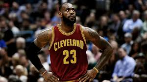

BROTHER DAN
Occupation: Brother
What better way to take on a single player experience (life) than with a player two? Dan and I have been fortunate to get along really well throughout our lives.
Keep your family close. I would have no story without Dan.

MY FATHER
Occupation: Father
The hardest working individual of all time. Dad has always been the number one motivator for Dan and I to excel.
He's also the textbook definition of 'aura' according to highly credible sources. An old friend of mine called me 'Boruto' because of pops, and that's pretty funny, context considered.

MY MOTHER
Occupation: Mother
Mom influenced most of my intelligence and ability to process emotions. A brilliant woman with a passion for the sciences. Mom could tell you 100 different things about
every chemical in that makeup or product that you've been using, and she's also responsible for all of my dope haircuts, which ALWAYS deserved more credit than received.

TOBY FOX
Occupation: Small White Dog
Favorite Work: Deltarune
Favorite Song: Attack of the Killer Queen
you know.

BRYAN LEE O'MALLEY
Occupation: Artist / Author
Favorite Work: Scott Pilgrim
Scott Pilgrim is kind of like the bible and it weirdly parallels my own life in a lot of funny ways. SP is the fiction that inspires me most as a writer.

SHIGESATO ITOI
Occupation: Game Developer
Favorite Work: Mother 3
Mother 3 is my favorite game of all time. The Mother franchise as a whole was everything to me growing up.
HIROHIKO ARAKI
Occupation: Author / Mangaka
Favorite Work: JoJo's Bizarre Adventure
The way Araki draws his peculiar androgynously posed characters has always been a huge, huge inspiration to me.
EDMUND McMILLEN
Occupation: Game Developer
Favorite Work: The Binding of Isaac
The Binding of Isaac is my most played video game of all time, and it gave me an obsession with demons that have cool horns.
I think a lot of that is pretty clear in my work, or, at least, it will be.

TATSUKI FUJIMOTO
Occupation: Author / Mangaka
Favorite Work: Chainsaw Man
Chainsaw Man is my favorite manga and it's not even close. Okay, that ending wasn't that bad, relax. Fujimoto's peak moments are THE peak moment.

VIC FUENTES (PIERCE THE VEIL)
Occupation: Musician
Favorite Work: A Flair for the Dramatic
Favorite Song: Props & Mayhem
Pierce the Veil is my favorite band (it was Alice in Chains for the longest time). A Flair for the Dramatic is my second favorite album of all time. Their entire discography is loaded.

SYMERE WOODS (LIL UZI VERT)
Occupation: Musician
Favorite Work: Luv is Rage 2
Favorite Song: LUV SCARS K.0 1600
I LOVE UZI!!! listening to Luv is Rage 2 completely changed me + acted as my segue deeper into the genre. I was pretty much instantly enamored by the sound design + engineering.
I feel like Uzi has the greatest unreleased catalog in all of music.
BARRINGTON HENDRICKS (JPEGMAFIA)
Occupation: Musician
Favorite Work: The Ghost~Pop Tape
Favorite Song: KELTEC!
I LOVE JPEGMAFIA!!! He has such an iconic sound, and the AMHAC era was one of my favorite times to be a music fan. Such a brilliant artist. Another self-produced musician I look up to.

TYLER, THE CREATOR
Occupation: Musician
Favorite Work: IGOR
Favorite Song: BEST INTEREST
From a creative standpoint of just doing what you want to do "because you can" do it, Tyler is my biggest inspiration. IGOR is my favorite album of all time and the Song
"BEST INTEREST," reminds me of the happiest points of my life.
KEVIN DURANT
Occupation: NBA Player
Kevin Durant is my favorite NBA player. I have watched his highlight reels 100 times over and have been studying his game for years on end.
DAISYKE AMAYA
Occupation: Game Developer
Favorite Work: Cave Story
Cave Story is an awesome game, and, if you know me at all, I look up to solo devs like they are the second coming of Jesus. Amaya in particular, with time taken into
account, did an incredible job and inspires me a lot. Cave Story is fantastic!

LEBRON JAMES
Occupation: NBA Player
The true standard of greatness. Bron was such a huge part of my childhood, and watching him take down the 2016 Warriors still chokes me up. I watched that entire series live, and it was
around the time I started REALLY getting into basketball. #GOAT
VINNY VINESAUCE
Occupation: Streamer / Musician
Favorite Song: Ozymandias
Vinny has always been my favorite streamer, for well over ten years now. We both hail from the same part of New York; and a large part of my humor originates from his streams.
I have his streams on all the time, the full-sauce channel has been my most watched YouTube channel for as long as I could remember!
Eric Barone (ConcernedApe)
Occupation: Game Developer
Favorite Work: Stardew Valley
Favorite Song: Fall (The Smell of Mushroom)
A solo-dev who graduated college as another self-proclaimed "regular-guy" ... just like... ME! To be able to deliver a powerhouse product like Stardew Valley is such an impressive feat...
It's still one of my favorite games to this day!